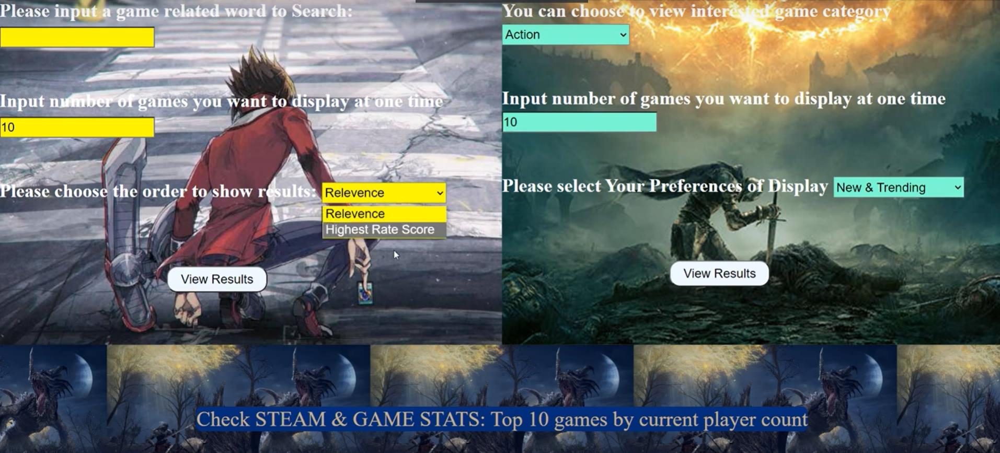
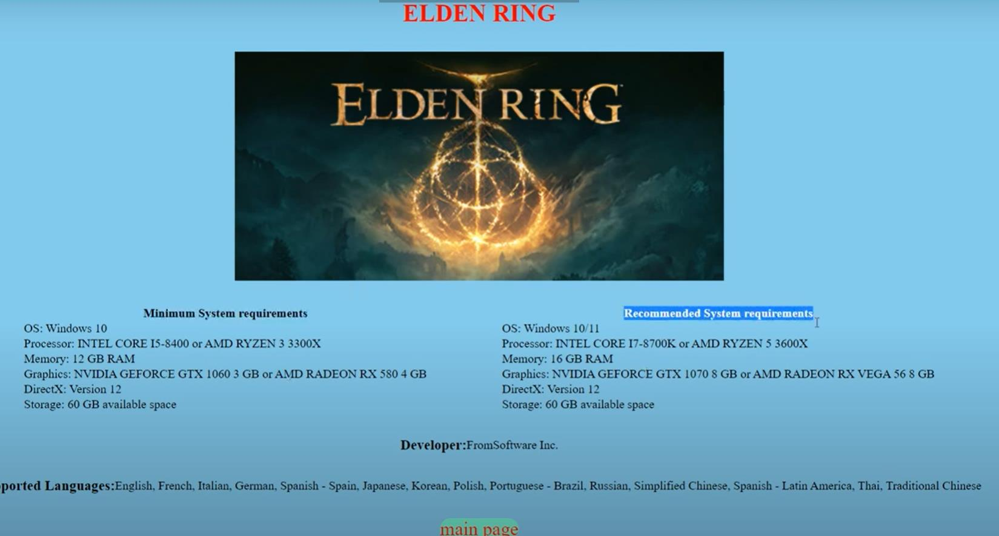
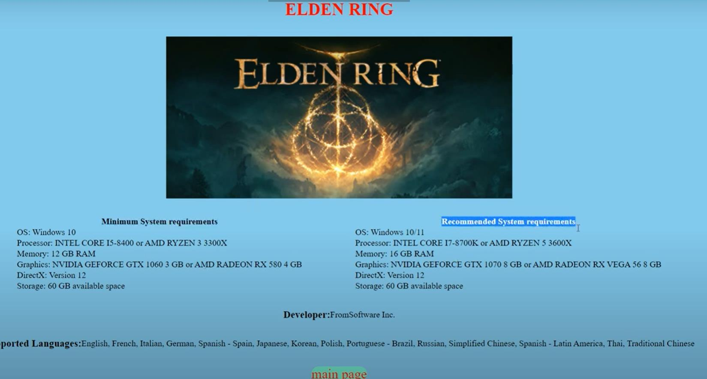
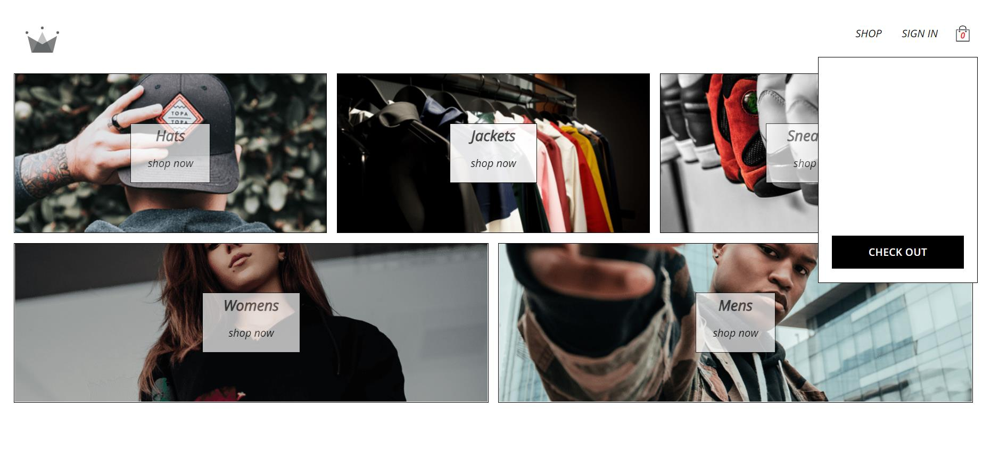

Sentiment Analysis on Attitude Towards Winter Olympics
Fetched recent Twitter posts related to Winter Olympics through tweepy. Hand labled posts emotions and checked our Krippendorff’s alpha value. Preprocessed the hand-labeled data, used "re" removed non-related parts in the datasets, removed stop words from a stopword list. Used "Jieba" package for text segmentation. Constructed Naive bayes, SVM and LSTM models by sklearn and torch. Converted each post to the desired input features by sklearn and gensim. Applied five fold cross validation in the train dataset and metrics is utilized to check the overall accuracy and F1-Macro score
Github repo
 

Steam games search website Github repo
Input of users will be caught through Post and Get methods and flask routes will deal with the inputs and render corresponding HTML files. Utilized BeautfiulSoup 4 to get the desired information (games categories display, steam games status etc) by crawling related URLs, fetched and cached each game’s specific information. Used sqlite3 as the database and temporally stored all data into tables. Fetched and cached data are organized into HTML files and SCSS are added to adjust the layout.

Crwn-clothing shopping websiteGithub repo
Built JSX components(directory, sign-in form, cart items,etc) and utilizd react router create home,authentication, category, checkout routes. Outlet is used to preserve the navagation bar in each routes. Main data are stored and retrieved in Firestore database(No-SQL). Authentication page and user documents are processed by firebase app. Adjusted layout using Sass and styled-components. Constructed react-redux store and combined reducers to control the state of user, cart and categories. Created redux-saga middle ware to dispatch specific actions. Built card payment section by Stripe API and Netlify functions
Netlify web deployThe deployed site is not working the same as the local site, some netlify functions must be established for the google sign in and visa payment